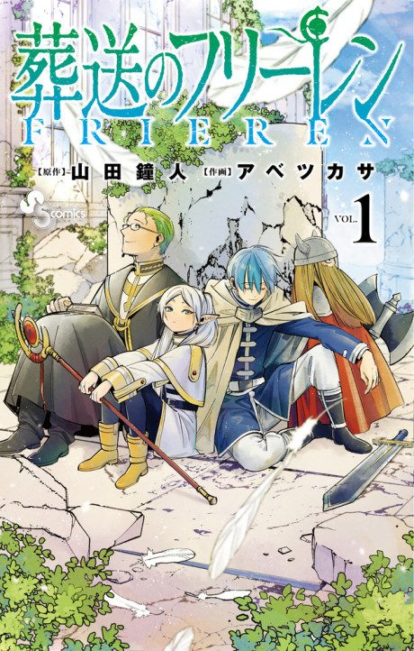
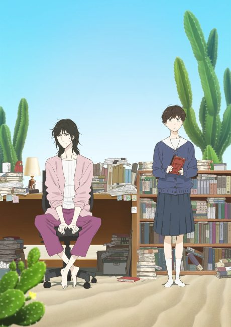
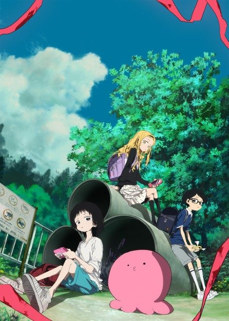
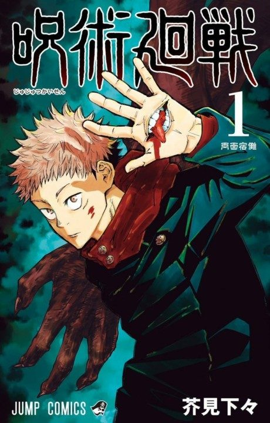
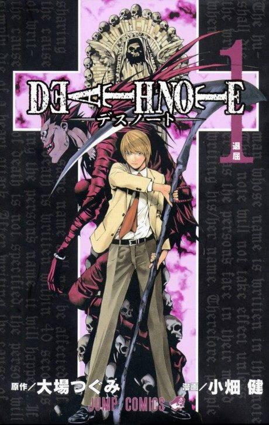
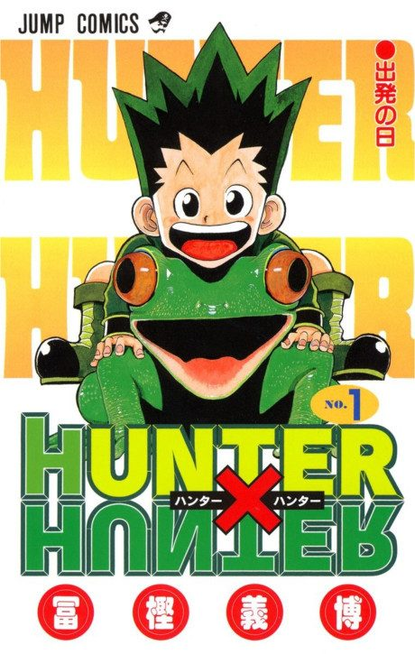
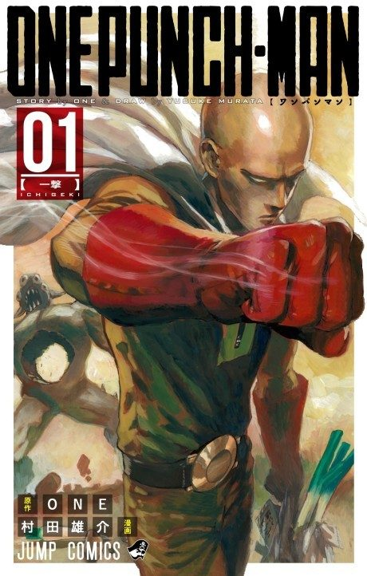
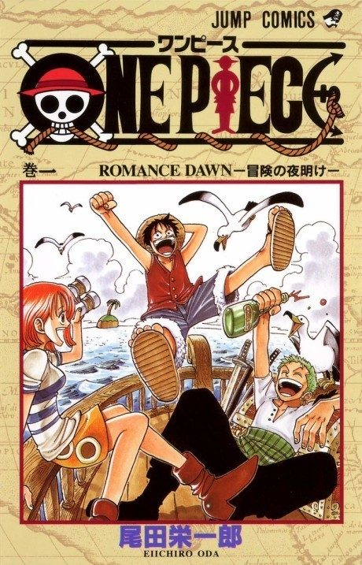
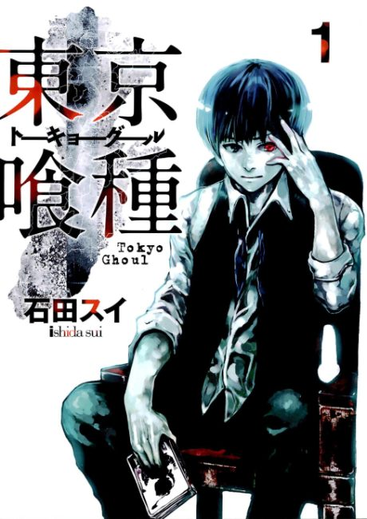
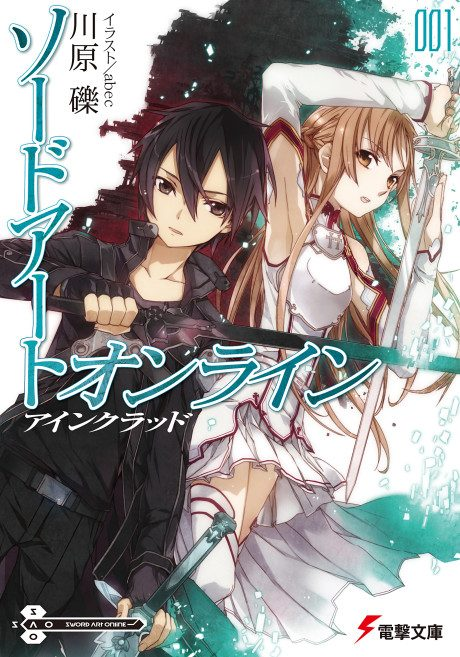

How a series page answers you
Frieren's anime ends after 38 episodes.
The manga keeps going.
Pick it up at chapter 81
See where Frieren picks up

1,328 anime, ranked. For each one: the episode viewers quit, the filler to skip, and the chapter where the manga picks up.
The ten best-rated anime on AniList right now, and where each story goes after the last episode.
Frieren's anime ends after 38 episodes.
The manga keeps going.
Pick it up at chapter 81
See where Frieren picks up
Ordered by AniList's average user score.








373 anime stop partway through the book they adapt. Each one comes with the chapter to start from, so you can keep reading the story without starting over.








Every series page opens on the answer: where the anime ends and where the book picks up. Below it, the drop map shows the episode viewers quit and the one where the show clicked for them, from reports people leave here. 2,573 key events stay blurred until you choose to read them, and every range links to its source.
From visitors. Signed-in readers report the episode where they stopped and the episode where the show clicked for them. Each chart says how many people reported, and a series nobody has reported on yet says so instead of guessing.
373 series have a chapter or volume to start from, each with its source linked on the Manga tab. Series that are original anime, or that haven't been checked yet, are labelled that way rather than given a number.
Episodes that aren't adapted from the source. Episodes that mix source and new material are marked mixed, recaps are marked recap, and the filler tab lists the source for every range.
By default the list follows AniList's average user score. Switch the sort to Animeter score to rank by ratings left here, weighted so a series needs about five votes before it can reach the top.
Not to read anything. To rate a series, report where you stopped or keep a list, sign in with your email: we send a link and a six-digit code, and there is no password.